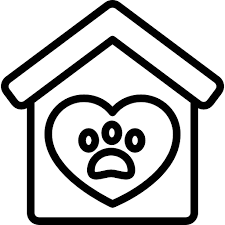

PET-ADOPTION.COM 
Home Page
Browse Available Pet
Find a dog/cat
Dog Care
Cat Care
Have a pet to give away
Contact Us
About Us
Our Mission
At PET-ADOPTION.COM, our mission is to connect loving homes with adorable cats and dogs in need. We believe that every pet deserves a chance at a happy, healthy life in a caring environment.
Our Vision
We envision a world where every pet has a loving home and no animal is left behind. We strive to reduce the number of homeless pets by facilitating the adoption process and promoting responsible pet ownership.
Our Values
Compassion:
We care deeply about the well-being of animals and are committed to helping them find loving homes.
Integrity:
We operate with honesty and transparency in all our interactions and processes.
Community:
We foster a sense of community among pet lovers and adopters, creating a support network for all.
Our Story
PET-ADOPTION.COM was founded by a group of animal lovers who recognized the need for a reliable platform to connect pets in need with potential adopters. Our journey began with a simple idea: to make pet adoption easier and more accessible for everyone. Over the years, we have grown into a trusted resource for thousands of adopters and shelters.
How It Works
Browse Listings:
Explore our extensive listings of adoptable pets, each with detailed profiles and photos. Meet
Meet Your Match:
Contact the shelter or foster home to learn more about the pet and arrange a meeting.
Adoption Process:
Follow our straightforward adoption process, with support from our dedicated team every step of the way.
Welcome Home:
Bring your new furry friend home and enjoy the unconditional love and joy they bring.
E-mail us
Privacy Policy
Terms of Service